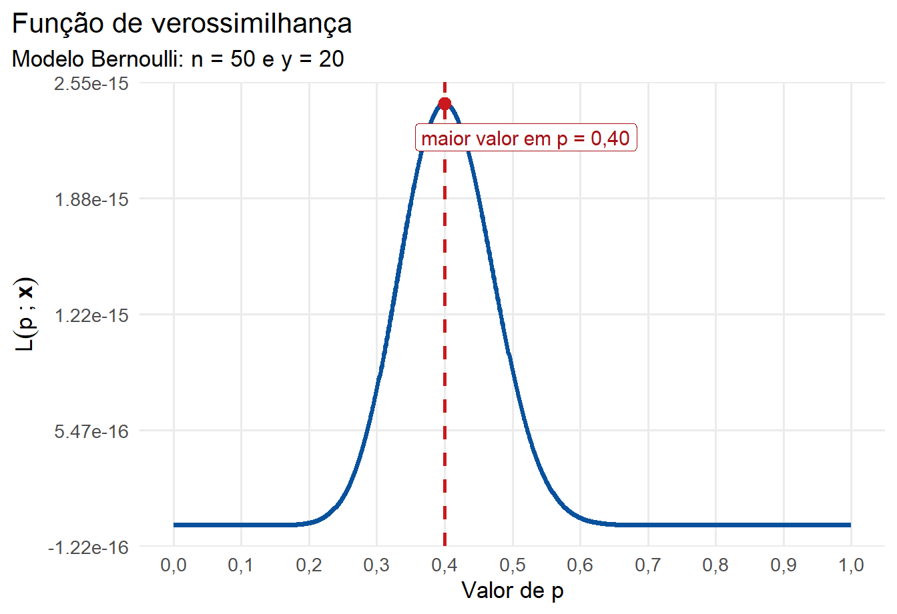
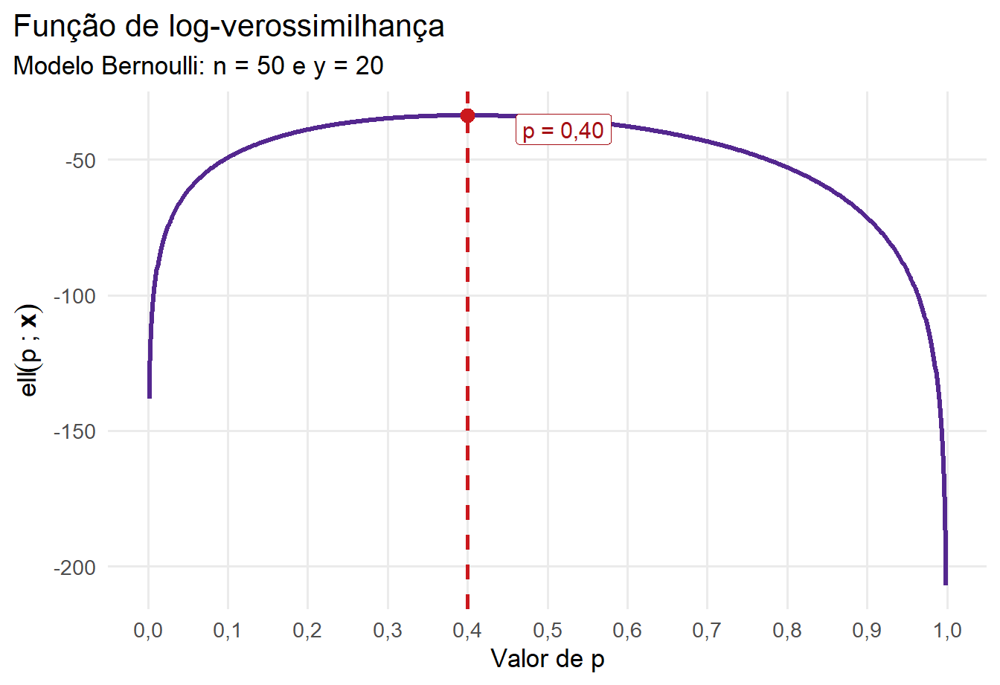

A inferência estatística utiliza informações obtidas em uma amostra para estudar características desconhecidas de uma população ou de um processo que produz dados. Como diferentes amostras podem gerar resultados diferentes, as conclusões obtidas a partir dos dados estão associadas à variabilidade e à incerteza.
O desenvolvimento parte do problema inferencial, do processo gerador de dados, da população, dos parâmetros e da amostragem. Um experimento com uma urna permite observar diretamente a variabilidade produzida por diferentes amostras e fornece a base para distinguir estatística, estimador e estimativa e para introduzir o modelo estatístico e a função de verossimilhança.
Ao final do capítulo, o experimento da urna é reproduzido e ampliado computacionalmente.
3.1 O problema da inferência estatística
Em muitas situações, deseja-se conhecer uma característica de uma população sem observar todos os seus elementos. Pode haver interesse, por exemplo, na proporção de eleitores favoráveis a determinado candidato, no peso médio de um produto fabricado por uma empresa ou no tempo médio de funcionamento de determinado equipamento.
Quando a observação de toda a população não é possível ou conveniente, utiliza-se uma amostra. Os dados obtidos nessa amostra são analisados para produzir conclusões sobre a característica de interesse na população. A amostra observada corresponde a apenas um dos possíveis conjuntos de dados que poderiam ser obtidos. Se o procedimento de amostragem fosse repetido, outros elementos poderiam ser selecionados e os resultados calculados a partir deles poderiam ser diferentes. Assim, a inferência estatística envolve a variabilidade associada ao processo de obtenção dos dados.
ImportanteInferência estatística
A inferência estatística utiliza dados observados para obter informação sobre características desconhecidas da população ou do processo que gerou os dados.
Para representar essa variabilidade e estabelecer procedimentos inferenciais, é necessário considerar como os dados são produzidos. Esse é o ponto de partida para o conceito de Processo Gerador de Dados.
3.2 Processo Gerador de Dados (PGD)
Os dados observados resultam de algum mecanismo que define as condições sob as quais determinados valores podem ocorrer e ser observados. Esse mecanismo será denominado Processo Gerador de Dados (PGD).
O PGD pode envolver diferentes componentes, como características da população, seleção das unidades observadas, condições de medição, fontes de variabilidade e relações de dependência entre as observações. Em termos gerais, o PGD descreve como o fenômeno de interesse e o mecanismo de observação se combinam para produzir os dados observados.
Os dados constituem uma realização particular desse processo. Se o mecanismo fosse repetido sob condições semelhantes, outros conjuntos de dados poderiam ser observados.
O PGD real raramente é conhecido em todos os seus detalhes. Por essa razão, o modelo estatístico fornece uma representação probabilística simplificada dos aspectos do PGD considerados relevantes para o problema estudado.
NotaPGD e hipótese i.i.d.
Em muitos modelos estatísticos, as observações são representadas por
\[
X_1,\ldots,X_n \overset{\mathrm{iid}}{\sim} F.
\]
A condição i.i.d. (iid) estabelece que as variáveis aleatórias são independentes e identicamente distribuídas. Essa é uma hipótese sobre o mecanismo de geração dos dados e não uma condição que define todo Processo Gerador de Dados.
Outros mecanismos podem produzir observações dependentes, distribuições diferentes entre unidades ou estruturas amostrais determinadas pelo plano de coleta.
A adequação da hipótese i.i.d. depende do mecanismo que produz os dados. A condição de distribuições idênticas requer que as observações possam ser representadas pelo mesmo modelo probabilístico, enquanto a independência requer que o comportamento de uma observação não altere probabilisticamente o das demais.
Por exemplo, componentes selecionados aleatoriamente de uma produção mantida sob condições estáveis podem ser razoavelmente representados como i.i.d. Em contrapartida, medições sucessivas de uma mesma variável ao longo do tempo podem apresentar dependência e exigir outro modelo.
3.3 Conceitos fundamentais
Uma população é o conjunto de unidades sobre as quais se deseja obter informação. Dependendo do problema, pode ser formada por pessoas, animais, objetos, empresas, municípios, medições ou outras unidades de interesse.
A unidade observacional é o elemento da população sobre o qual uma ou mais características são observadas ou medidas. Por exemplo, pode corresponder a uma pessoa, um animal, uma embalagem, um município ou uma bola da urna utilizada no experimento deste capítulo.
Quando a população é finita, seu tamanho será representado por \(N\).
Uma quantidade que caracteriza a população, o processo ou o modelo estatístico de interesse é denominada parâmetro. Na abordagem frequentista desenvolvida neste livro, o parâmetro é tratado como uma quantidade fixa. Em um problema inferencial, seu valor é, em geral, desconhecido e deve ser estudado a partir dos dados observados.
Os parâmetros são usualmente representados por letras gregas, como \(\mu\), \(\sigma^2\) e \(\theta\). Algumas quantidades, entretanto, possuem notações convencionais próprias. Um exemplo é a proporção populacional, frequentemente representada pela letra \(p\).
Por exemplo, podem constituir parâmetros:
a média populacional \(\mu\);
a variância populacional \(\sigma^2\);
uma proporção populacional \(p\).
Um censo consiste na observação de todas as unidades de uma população finita. Quando o censo é possível e as medições são obtidas sem erro, uma característica da população pode ser calculada diretamente. Em muitas aplicações, observar toda a população é inviável em razão de custo, tempo, disponibilidade das unidades ou do próprio processo de medição.
Uma amostra é uma coleção de unidades ou observações utilizada para obter informação sobre a população ou o processo de interesse. Seu tamanho será representado por \(n\). A amostragem corresponde ao procedimento utilizado para selecionar ou obter essas unidades ou observações.
No experimento que será realizado em sala de aula, a população é formada por \(N=2400\) bolas de mesmo tamanho, das quais 900 são vermelhas e 1500 são brancas. A característica de interesse é a proporção populacional de bolas vermelhas,
\[
p = \frac{900}{2400} = 0{,}375.
\]
Conhecemos \(p\) nesse experimento porque a composição completa da urna é conhecida. Essa informação será utilizada como referência para estudar o que ocorre quando apenas uma amostra da urna é observada.
Se representarmos por \(Y\) o número de bolas vermelhas em uma amostra aleatória de tamanho \(n\), a proporção amostral pode ser escrita como
\[
\widehat p
=
\frac{Y}{n}.
\]
Como será formalizado adiante, \(\widehat p\) é uma estatística, pois é uma função da amostra. Quando utilizada para obter informação sobre o parâmetro populacional \(p\), ela desempenha o papel de estimador de \(p\). Depois que uma amostra específica é observada e \(Y\) assume um valor \(y\), o valor numérico
\[
\widehat p(\mathbf x)
=
\frac{y}{n}
\]
constitui uma estimativa de \(p\).
Essa distinção entre estatística, estimador e estimativa será retomada adiante, após o experimento da urna, quando será possível observar diretamente como \(\widehat p\) varia entre diferentes amostras.
Mecanismo de seleção da amostra
A possibilidade de generalizar resultados da amostra para a população depende, entre outros aspectos, do mecanismo utilizado para selecionar as unidades.
Uma seleção que favoreça sistematicamente determinados elementos pode produzir viés de seleção. Por exemplo, se a retirada das bolas favorecer determinadas regiões da urna, as probabilidades de inclusão podem deixar de corresponder ao plano amostral pretendido.
O mecanismo de participação também pode afetar a composição da amostra. Em levantamentos de resposta voluntária, por exemplo, mesmo que o convite seja dirigido a toda a população, os indivíduos que respondem podem diferir sistematicamente dos que não respondem. Nesse caso, o conjunto de respondentes não constitui automaticamente uma representação adequada da população.
Na amostragem aleatória, a seleção das unidades é realizada segundo um mecanismo probabilístico conhecido. Em uma amostragem aleatória simples sem reposição, todas as amostras de tamanho \(n\) possuem a mesma probabilidade de seleção.
A aleatorização não garante que cada amostra observada reproduza exatamente a composição da população. Amostras diferentes apresentam variação natural. Sua função é estabelecer um mecanismo de seleção que permita caracterizar probabilisticamente essa variabilidade e sustentar a inferência para a população considerada.
3.4 Experimento em sala de aula
O objetivo do experimento é observar como amostras diferentes, obtidas da mesma população pelo mesmo procedimento, podem produzir valores diferentes para a proporção amostral.
A população é a urna com \(N=2400\) bolas, das quais 900 são vermelhas. Portanto, a proporção populacional conhecida é \(p=0{,}375\).
Cada grupo realizará uma amostragem seguindo o mesmo protocolo:
misturar cuidadosamente as bolas da urna;
retirar, com uma pá de amostragem com 50 espaços, \(n=50\) bolas, sem reposição durante a formação da amostra;
contar o número observado \(y\) de bolas vermelhas;
calcular a proporção observada \(\widehat p=y/50\);
registrar os valores de \(y\) e \(\widehat p\);
devolver todas as bolas à urna antes da amostragem do grupo seguinte e misturá-las novamente.
Cada grupo realiza uma amostragem separada. Dentro de cada amostra, as bolas são retiradas sem reposição; entre as amostragens dos grupos, todas as bolas são devolvidas à urna, restabelecendo a população original.
Os resultados dos grupos serão reunidos somente depois que todas as amostras tiverem sido obtidas.
Essas proporções serão organizadas em uma tabela e representadas graficamente. A representação resultante mostra a distribuição empírica dos valores de \(\widehat p\) obtidos pelos grupos e permite observar a variabilidade produzida pela repetição da amostragem.
Mesmo que todos os grupos utilizem a mesma população, o mesmo tamanho amostral e o mesmo procedimento, os valores de \(\widehat p\) não precisam coincidir. Essa variação decorre da seleção de conjuntos diferentes de bolas em cada amostra.
O experimento fornece uma primeira representação empírica da variabilidade que será descrita probabilisticamente pela distribuição amostral de \(\widehat p\) no Capítulo 4.
Verificação de aprendizagem
Explique a função da mistura da urna antes de cada amostragem.
Explique por que diferentes grupos podem obter valores distintos de \(y\) e de \(\widehat p\), mesmo utilizando o mesmo tamanho amostral.
Compare os valores de \(\widehat p\) obtidos pelos grupos com a proporção populacional \(p=0{,}375\).
A partir dos resultados da turma, descreva o que permaneceu fixo e o que variou entre as diferentes amostras.
3.5 Estatísticas, estimadores e estimativas
Os resultados do experimento podem agora ser formalizados distinguindo a amostra antes da observação dos valores e a amostra efetivamente observada.
Antes da coleta, representamos a amostra pelo vetor aleatório
\[
\mathbf{X}=(X_1,\ldots,X_n).
\]
Nesse caso, \(X_1,\ldots,X_n\) são variáveis aleatórias e seus valores ainda não foram observados. Depois da coleta, uma realização particular desse vetor é representada por
\[
\mathbf{x}=(x_1,\ldots,x_n),
\]
em que \(x_1,\ldots,x_n\) são os valores efetivamente observados.
A convenção de utilizar letras maiúsculas para variáveis aleatórias e letras minúsculas para suas realizações permite distinguir uma quantidade definida antes da observação dos dados de seu valor em uma amostra particular (Cox, 2006, seç. 1.1; Ramachandran; Tsokos, 2021, seç. 5.2, pp. 180–182).
ImportanteEstatística
Uma estatística é uma função conhecida das variáveis aleatórias que compõem a amostra e cuja expressão não envolve parâmetros desconhecidos. De forma geral,
\[
T=T(\mathbf X)=T(X_1,\ldots,X_n).
\]
Antes da observação da amostra, \(T(\mathbf X)\) é uma variável aleatória. Depois que a amostra \(\mathbf x=(x_1,\ldots,x_n)\) é observada, a estatística assume o valor
\[
T(\mathbf x)=T(x_1,\ldots,x_n).
\]
A condição de que uma estatística não dependa de parâmetros desconhecidos refere-se à sua regra de cálculo. Sua distribuição de probabilidade, entretanto, pode depender dos parâmetros do modelo. A distribuição de probabilidade de uma estatística é denominada distribuição amostral e será estudada no Capítulo 4.
No experimento da urna, por exemplo, a quantidade \(Y\), que representa o número de bolas vermelhas na amostra aleatória, é uma estatística. A proporção amostral
\[
\widehat p=\frac{Y}{n}
\]
também é uma estatística, pois é calculada apenas a partir dos resultados da amostra e do tamanho amostral conhecido.
Uma estatística pode ser utilizada para estimar um parâmetro desconhecido. Considere inicialmente um parâmetro populacional \(\theta\). Se a estatística \(T(\mathbf X)\) é escolhida como regra para estimar \(\theta\), escrevemos
\[
\widehat\theta=T(\mathbf X),
\]
e denominamos \(\widehat\theta\)estimador de \(\theta\).
Como o estimador é uma função da amostra aleatória, seu valor pode variar de uma amostra para outra. Na abordagem frequentista considerada neste livro, essa situação é distinta daquela do parâmetro. Aqui \(\theta\) é tratado como uma quantidade fixa, embora desconhecida, enquanto \(\widehat\theta\) é uma variável aleatória.
Depois que uma amostra particular \(\mathbf x\) é observada, o estimador assume o valor
\[
\widehat\theta(\mathbf x)=T(\mathbf x).
\]
Esse valor é denominado estimativa de \(\theta\).
ImportanteEstimador e estimativa
Considere
\[
\widehat\theta=T(\mathbf X).
\]
O estimador\(\widehat\theta\) é a regra, definida como uma função da amostra aleatória, utilizada para estimar o parâmetro \(\theta\).
Depois que a amostra \(\mathbf x\) é observada,
\[
\widehat\theta(\mathbf x)=T(\mathbf x)=t
\]
é a estimativa, isto é, o valor assumido pelo estimador naquela amostra particular.
Assim, o parâmetro \(\theta\) é fixo e desconhecido, o estimador \(\widehat\theta\) é aleatório antes da observação da amostra e a estimativa é o valor obtido após a observação dos dados (Chihara; Hesterberg, 2022, definição 4.2, p. 79; Ramachandran; Tsokos, 2021, seç. 5.2, pp. 181–182).
No experimento da urna, o parâmetro de interesse é a proporção populacional \(p\). A proporção amostral
\[
\widehat p=\frac{Y}{n}
\]
é utilizada como estimador de \(p\).
Por exemplo, se em uma amostra de \(n=50\) bolas for observado \(y=20\), a estimativa obtida é
\[
\widehat p
=
\frac{20}{50}
=
0{,}40.
\]
Nesse caso, \(\widehat p=Y/n\) representa o estimador de \(p\), enquanto
Na notação estatística, é comum utilizar o mesmo símbolo, como \(\widehat p\) ou \(\widehat\theta\), tanto para o estimador quanto para seu valor observado. A distinção entre os dois é determinada pelo contexto. Quando for necessário explicitá-la, utilizaremos \(T(\mathbf X)\) para a estatística como variável aleatória e \(t=T(\mathbf x)=t\) para seu valor na amostra observada.
NotaEstimação de uma função do parâmetro
Em alguns problemas, a quantidade de interesse não é o próprio parâmetro \(\theta\), mas uma função desse parâmetro,
\[
\tau(\theta).
\]
Nesse caso, uma estatística \(T(\mathbf X)\) utilizada para estimar \(\tau(\theta)\) pode ser representada por
\[
\widehat{\tau}=T(\mathbf X).
\]
Depois da observação da amostra \(\mathbf x\), o valor
\[
\widehat{\tau}(\mathbf x)=T(\mathbf x)=t
\]
é uma estimativa de \(\tau(\theta)\).
Portanto, a definição de estimador permanece a mesma; o que se altera é a quantidade paramétrica que constitui o objeto da estimação.
Uma mesma expressão pode ser considerada inicialmente apenas como uma estatística e, quando associada a uma quantidade paramétrica que se deseja estimar, desempenhar o papel de estimador. Por exemplo, \(\overline X\) é uma estatística por ser uma função da amostra que não envolve parâmetros desconhecidos. Quando é utilizada para estimar a média populacional \(\mu\), \(\overline X\) é um estimador de \(\mu\)(Chihara; Hesterberg, 2022, seç. 1.6 e definição 4.2; Ramachandran; Tsokos, 2021, seç. 5.2).
3.6 Exemplo-guia: modelo Bernoulli para a urna
O experimento realizado em sala de aula utiliza amostragem sem reposição. Nesse caso, a composição da urna se modifica a cada retirada e as observações realizadas dentro de uma mesma amostra não são independentes.
Para introduzir um modelo probabilístico simples que permita formalizar os conceitos de parâmetro, estatística e estimador, consideraremos agora um mecanismo de amostragem diferente: após cada retirada, a bola é devolvida à urna e as bolas são novamente misturadas antes da retirada seguinte.
Com a reposição, a composição da urna permanece a mesma em todas as retiradas. Se todas as bolas possuem a mesma probabilidade de seleção, a probabilidade de retirar uma bola vermelha é constante e igual à proporção de bolas vermelhas na urna.
Na urna utilizada em sala de aula,
\[
p=\frac{900}{2400}=0{,}375.
\]
Esse valor é conhecido porque a composição da urna foi previamente estabelecida. Para formular um problema de inferência, passaremos agora da urna física para um modelo Bernoulli paramétrico idealizado, no qual \(p\) é desconhecido e deve ser estudado a partir da amostra.
Nesse modelo, \(p\) representa a probabilidade de obter uma bola vermelha em cada retirada e pode assumir qualquer valor no intervalo \([0,1]\).
Defina
\[
X_i=
\begin{cases}
1, & \text{se a }i\text{-ésima bola é vermelha},\\
0, & \text{se a }i\text{-ésima bola é branca}.
\end{cases}
\]
Cada variável \(X_i\) possui a mesma distribuição Bernoulli com parâmetro \(p\), e a reposição permite tratar as retiradas como independentes.
A estatística que representa o número de bolas vermelhas na amostra é
\[
Y=\sum_{i=1}^n X_i,
\]
e a proporção amostral é
\[
\widehat p
=
\frac{Y}{n}
=
\frac{1}{n}\sum_{i=1}^n X_i.
\]
Assim, \(Y\) e \(\widehat p\) são estatísticas. Quando o objetivo é estimar a proporção populacional \(p\), \(\widehat p\) é utilizado como estimador de \(p\)(Chihara; Hesterberg, 2022, seç. 1.5, seção 1.6 e apêndice B.1).
AvisoAmostragem com e sem reposição
O modelo Bernoulli i.i.d. apresentado nesta seção corresponde ao mecanismo de amostragem com reposição e, portanto, não descreve exatamente o experimento realizado anteriormente em sala de aula.
Na amostragem sem reposição em uma população finita, as retiradas realizadas dentro de uma mesma amostra são dependentes e o número de bolas vermelhas possui distribuição hipergeométrica.
Os dois mecanismos permitem estudar a variabilidade decorrente da amostragem, mas produzem modelos probabilísticos diferentes. A amostragem sem reposição e a correção para população finita serão estudadas no Capítulo 4.
Considere uma urna com \(N\) bolas, das quais \(M\) são vermelhas.
Antes de qualquer retirada,
\[
P(X_1=1)
=
\frac{M}{N}.
\]
Se a primeira bola retirada for vermelha e não for devolvida à urna, restam \(M-1\) bolas vermelhas entre \(N-1\) bolas. Portanto,
\[
P(X_2=1\mid X_1=1)
=
\frac{M-1}{N-1}.
\]
Em geral,
\[
\frac{M-1}{N-1}
\neq
\frac{M}{N}.
\]
Logo,
\[
P(X_2=1\mid X_1=1)
\neq
P(X_2=1),
\]
e as retiradas não são independentes.
Na urna do experimento,
\[
P(X_2=1)
=
\frac{900}{2400},
\]
enquanto
\[
P(X_2=1\mid X_1=1)
=
\frac{899}{2399}.
\]
A ausência de reposição modifica a composição da urna após cada retirada e, consequentemente, a probabilidade associada às retiradas seguintes.
3.7 Modelo estatístico e função de verossimilhança
especifica probabilisticamente como os dados podem ser produzidos para cada possível valor de \(p\). Essa representação é um exemplo de modelo estatístico.
De forma mais geral, a análise inferencial requer uma representação probabilística para o vetor de observações
\[
\mathbf X=(X_1,\ldots,X_n).
\]
Essa representação deve especificar quais distribuições de probabilidade são consideradas possíveis para \(\mathbf X\) e quais quantidades desconhecidas distinguem essas distribuições.
Modelo estatístico
Considere um vetor aleatório \(\mathbf X\) que assume valores em um espaço amostral \(\mathcal X\). Um modelo estatístico paramétrico é uma família de distribuições de probabilidade
\[
\mathcal F
=
\{F(\cdot \mid \theta):\theta\in\Theta\},
\]
em que:
\(\theta\) representa o parâmetro, ou vetor de parâmetros, do modelo;
\(\Theta\) é o espaço paramétrico, isto é, o conjunto dos valores possíveis de \(\theta\);
para cada \(\theta\in\Theta\), \(F(\cdot \mid \theta)\) representa uma possível distribuição conjunta para \(\mathbf X\).
Na abordagem frequentista, admite-se que existe um valor fixo, porém desconhecido, de \(\theta\) associado ao mecanismo que produziu os dados. O objetivo inferencial consiste em utilizar a amostra observada para obter informação sobre esse valor.
Quando a distribuição conjunta possui função de probabilidade ou densidade, ela pode ser representada por
Para cada valor fixado de \(\theta\), a função \(f(\mathbf x \mid \theta)\) descreve probabilisticamente os possíveis valores de \(\mathbf X\).
NotaProcesso Gerador de Dados e modelo estatístico
O Processo Gerador de Dados (PGD) corresponde ao mecanismo que produz os dados e pode envolver aspectos da população, seleção das unidades, condições de medição, dependência e outras fontes de variabilidade.
O modelo estatístico é uma representação probabilística dos aspectos desse processo considerados relevantes para a análise.
Assim, o modelo não precisa reproduzir todos os detalhes do PGD. Ele estabelece uma família de distribuições probabilísticas dentro da qual será realizada a inferência.
A expressão \(f_{\mathbf X}(\mathbf x \mid \theta)\) representa a função de probabilidade ou densidade conjunta da amostra. Ela não precisa, em geral, ser escrita como produto das funções correspondentes às observações individuais.
Quando \(X_1,\ldots,X_n\) são independentes e identicamente distribuídas, com função de probabilidade ou densidade comum \(f( \cdot \mid \theta)\), a independência permite escrever
A forma em produto é, portanto, consequência da hipótese de independência. Para observações dependentes, a distribuição conjunta deve incorporar a estrutura de dependência existente.
Distribuição conjunta da amostra no modelo Bernoulli
Nesta notação, \(p\) é o parâmetro fixado do modelo. A barra vertical é utilizada para indicar que a função de probabilidade é especificada para determinado valor de \(p\); não estamos tratando \(p\) como uma variável aleatória.
Essa expressão representa simultaneamente as duas possibilidades. Se \(x_i=1\),
\[
f(1\mid p)
=
P(X=1\mid p)
=
p,
\]
enquanto, se \(x_i=0\),
\[
f(0\mid p)
=
P(X=0 \mid p)
=
1-p.
\]
Considere agora o vetor aleatório
\[
\mathbf X=(X_1,\ldots,X_n)
\]
e uma possível realização
\[
\mathbf x=(x_1,\ldots,x_n)\in\{0,1\}^n.
\]
Como as variáveis \(X_1,\ldots,X_n\) são independentes, a função de probabilidade conjunta de \(\mathbf X\) é o produto das funções de probabilidade individuais:
A Equação 3.1 fornece, para um valor fixado de \(p\), a probabilidade associada a cada possível realização \(\mathbf x=(x_1,\ldots,x_n)\) do vetor aleatório \(\mathbf X\). Antes da observação dos dados, \(\mathbf X\) é aleatório e diferentes sequências podem ser observadas.
possuem, em ambos os casos, \(v=2\). Para um valor fixado de \(p\), cada uma dessas sequências possui probabilidade
\[
p^2(1-p)^3.
\]
Isso ocorre porque, nesse modelo, a função de probabilidade conjunta depende da sequência \(\mathbf x\) por meio do número de ocorrências de 1 e de 0, e não da ordem em que esses valores aparecem.
NotaSequência observada e número de sucessos
A probabilidade de uma sequência específica com \(y\) bolas vermelhas é
\[
p^y(1-p)^{n-y}.
\]
Essa expressão não deve ser confundida com a probabilidade de observar exatamente \(y\) bolas vermelhas, independentemente da ordem em que aparecem na sequência.
Como existem
\[
\binom{n}{y}
\]
sequências distintas com exatamente \(y\) ocorrências de 1, a distribuição da estatística
Portanto, para cada valor \(p\in[0,1]\), o modelo especifica uma distribuição conjunta para \(\mathbf X\). A amostra observada corresponde a uma realização particular dessa distribuição.
Função de verossimilhança
Depois que a amostra é observada, a perspectiva pode ser invertida. Os dados
\[
\mathbf x=(x_1,\ldots,x_n)
\]
passam a ser conhecidos, enquanto o parâmetro \(\theta\) permanece desconhecido.
A mesma expressão matemática \(f_{\mathbf X}(\mathbf x \mid \theta)\) pode então ser examinada como função de \(\theta\), mantendo \(\mathbf x\) fixado.
ImportanteFunção de verossimilhança
Para uma amostra observada \(\mathbf x\), a função de verossimilhança é definida por
considerada como função do parâmetro \(\theta\), com os dados \(\mathbf x\) fixados.
A diferença entre a função de probabilidade ou densidade e a função de verossimilhança está, portanto, no elemento que é considerado variável.
Na função
\[
f_{\mathbf X}(\mathbf x \mid \theta),
\]
fixa-se \(\theta\) e estudam-se os possíveis valores de \(\mathbf X\).
Na função de verossimilhança
\[
L(\theta;\mathbf x),
\]
fixa-se a amostra observada \(\mathbf x\) e comparam-se os diferentes valores de \(\theta\) permitidos pelo modelo.
AvisoProbabilidade e verossimilhança
A verossimilhança não é, em geral, uma distribuição de probabilidade para \(\theta\).
Na abordagem frequentista, \(\theta\) é tratado como uma quantidade fixa e desconhecida. A função \(L(\theta;\mathbf x)\) permite comparar os diferentes valores de \(\theta\) em relação aos dados observados.
Valores de \(\theta\) que produzem maior verossimilhança apresentam maior compatibilidade com os dados observados dentro do modelo considerado. Essa comparação é relativa: a verossimilhança não representa a probabilidade de \(\theta\) assumir determinado valor (Cox, 2006, seç. 2.1).
Verossimilhança no modelo Bernoulli
Na distribuição conjunta do modelo Bernoulli, obtivemos em Equação 3.1
Na interpretação probabilística dessa expressão, \(p\) é fixado e consideram-se as diferentes realizações possíveis de \(\mathbf X\).
Depois que uma realização específica
\[
\mathbf x=(x_1,\ldots,x_n)
\]
é observada, ocorre uma mudança de perspectiva. Os valores \(x_1,\ldots,x_n\) e, consequentemente, \(y\) passam a ser fixos, enquanto \(p\) é a quantidade desconhecida.
A mesma expressão da Equação 3.1, considerada agora como função de \(p\), define a função de verossimilhança:
Portanto, não estamos definindo uma nova distribuição de probabilidade. A expressão matemática é a mesma, mas sua interpretação é diferente:
em \(f_{\mathbf X}(\mathbf x\mid p)\), fixa-se \(p\) e consideram-se os possíveis valores de \(\mathbf X\);
em \(L(p;\mathbf x)\), fixa-se a realização observada \(\mathbf x\) e comparam-se os possíveis valores de \(p\).
Considere, por exemplo, uma amostra de tamanho \(n=50\) na qual foram observadas \(y=20\) bolas vermelhas. Nesse caso,
\[
L(p;\mathbf x)
=
p^{20}(1-p)^{30}.
\]
Os dados permanecem fixos: foram observadas 20 bolas vermelhas e 30 bolas brancas. O que varia é \(p\). A função de verossimilhança permite comparar os diferentes valores de \(p\in[0,1]\) em relação à mesma amostra observada.
A função pode ser visualizada diretamente na sua escala original.
library(ggplot2)n <-50y <-20p_grade <-seq(0, 1, length.out =1001)dados_veross <-data.frame(p = p_grade)dados_veross$L <-with( dados_veross, p^y * (1- p)^(n - y))# Localização numérica do maior valor da verossimilhançaindice_max <-which.max(dados_veross$L)p_max <- dados_veross$p[indice_max]L_max <- dados_veross$L[indice_max]ggplot(dados_veross, aes(x = p, y = L)) +geom_line(color ="#08519C",linewidth =1.3 ) +geom_vline(xintercept = p_max,linetype ="dashed",color ="#CB181D",linewidth =0.9 ) +geom_point(x = p_max,y = L_max,color ="#CB181D",size =3 ) +annotate("label",x =0.52,y =0.92* L_max,label ="maior valor em p = 0,40",color ="#A50F15",fill ="white",size =4 ) +scale_x_continuous(limits =c(0, 1),breaks =seq(0, 1, by =0.1),labels = scales::label_number(accuracy =0.1,decimal.mark ="," ) ) +scale_y_continuous(labels = scales::label_scientific() ) +labs(x ="Valor de p",y =expression(L(p~";"~bold(x))),title ="Função de verossimilhança",subtitle ="Modelo Bernoulli: n = 50 e y = 20" ) +theme_minimal(base_size =13) +theme(panel.grid.minor =element_blank(),plot.title.position ="plot" )

Figura 3.1: Função de verossimilhança para o modelo Bernoulli com \(n=50\) e \(y=20\).
A altura da curva depende da escala da função de verossimilhança e, neste exemplo, seus valores são numericamente pequenos. O que interessa para a comparação entre valores de \(p\) é a forma da função e sua posição relativa. O gráfico mostra que valores próximos de \(0{,}40\) apresentam maior verossimilhança para a amostra observada, enquanto valores mais afastados produzem valores menores de \(L(p;\mathbf x)\).
Log-verossimilhança
Em muitos problemas, é conveniente trabalhar com o logaritmo da função de verossimilhança. Define-se a função de log-verossimilhança por
O logaritmo transforma o produto presente na verossimilhança em uma soma, o que facilita manipulações algébricas e numéricas.
Além disso, como a função logaritmo é estritamente crescente, se
\[
L(p_1;\mathbf x)
>
L(p_2;\mathbf x),
\]
então
\[
\ell(p_1;\mathbf x)
>
\ell(p_2;\mathbf x).
\]
Consequentemente, a verossimilhança e a log-verossimilhança ordenam os valores de \(p\) da mesma forma e atingem seu máximo no mesmo ponto.
n <-50y <-20# Os extremos 0 e 1 são excluídos porque log(0) não é definido.p_grade <-seq(0.001, 0.999, by =0.001)dados_logveross <-data.frame(p = p_grade)dados_logveross$logL <-with( dados_logveross, y *log(p) + (n - y) *log(1- p))indice_max <-which.max(dados_logveross$logL)p_max <- dados_logveross$p[indice_max]logL_max <- dados_logveross$logL[indice_max]ggplot(dados_logveross, aes(x = p, y = logL)) +geom_line(color ="#54278F",linewidth =1.2 ) +geom_vline(xintercept = p_max,linetype ="dashed",color ="#CB181D",linewidth =0.9 ) +geom_point(x = p_max,y = logL_max,color ="#CB181D",size =3 ) +annotate("label",x =0.52,y = logL_max -5,label ="p = 0,40",color ="#A50F15",fill ="white",label.size =0.2,size =4 ) +scale_x_continuous(limits =c(0, 1),breaks =seq(0, 1, by =0.1),labels = scales::label_number(accuracy =0.1,decimal.mark ="," ) ) +labs(x ="Valor de p",y =expression(ell(p~";"~bold(x))),title ="Função de log-verossimilhança",subtitle ="Modelo Bernoulli: n = 50 e y = 20" ) +theme_minimal(base_size =13) +theme(panel.grid.minor =element_blank(),plot.title.position ="plot" )

Figura 3.2: Função de log-verossimilhança para o modelo Bernoulli com \(n=50\) e \(y=20\).
Os dois gráficos apresentam o maior valor no mesmo ponto. A diferença está na escala vertical: o primeiro representa diretamente \(L(p;\mathbf x)\), enquanto o segundo representa seu logaritmo.
Observe ainda que, na expressão
\[
L(p;\mathbf x)
=
p^y(1-p)^{n-y},
\]
a sequência completa
\[
(x_1,\ldots,x_n)
\]
aparece apenas por meio de
\[
y=\sum_{i=1}^n x_i.
\]
Assim, duas sequências observadas com o mesmo número \(y\) de bolas vermelhas produzem a mesma função de verossimilhança para \(p\), mesmo que as bolas vermelhas e brancas apareçam em ordens diferentes.
Essa propriedade será formalizada posteriormente por meio do conceito de estatística suficiente.
Verossimilhança e estimação
A função de verossimilhança permite comparar diferentes valores do parâmetro em relação à amostra observada. Uma forma de utilizar essa comparação para construir uma estimativa consiste em procurar o valor de \(\theta\) que torna a verossimilhança tão grande quanto possível.
Considere uma amostra observada \(\mathbf x\). Para cada valor \(\theta\in\Theta\), podemos calcular
\[
L(\theta;\mathbf x).
\]
Entre os valores permitidos pelo espaço paramétrico \(\Theta\), procuramos aqueles para os quais a função de verossimilhança atinge seu maior valor.
então \(\theta^\ast\) é o valor de \(\theta\) que maximiza a função de verossimilhança para a amostra observada.
Esse valor é denominado estimativa de máxima verossimilhança.
Em alguns problemas, entretanto, mais de um valor de \(\theta\) pode produzir o mesmo valor máximo da função de verossimilhança. Por essa razão, é conveniente representar o conjunto de todos os valores que maximizam a função.
A estimativa de máxima verossimilhança é, portanto, qualquer valor pertencente a esse conjunto. Quando esse conjunto possui mais de um elemento, qualquer um de seus elementos pode ser considerado uma estimativa de máxima verossimilhança.
Para definir um estimador como uma função da amostra, entretanto, é necessário estabelecer uma regra de escolha quando houver mais de um maximizador. Quando o máximo é único, essa escolha não apresenta ambiguidade. Escrevemos
O símbolo \(\in\) é utilizado porque, em geral, o lado direito representa um conjunto de valores que maximizam a verossimilhança. Quando o máximo é atingido em um único valor, podemos escrever, de forma equivalente,
Assim, para uma amostra observada \(\mathbf x\), a máxima verossimilhança fornece uma regra para selecionar um valor do parâmetro a partir dos dados.
Até aqui estamos tratando de uma estimativa, pois a amostra já foi observada. Para obter o correspondente estimador, consideramos a mesma regra para todas as possíveis realizações da amostra aleatória.
A cada possível realização \(\mathbf x\) de \(\mathbf X\), associamos um valor \(\widehat\theta_{\mathrm{MV}}(\mathbf x)\) que maximiza a função de verossimilhança. Essa regra define o estimador de máxima verossimilhança. Antes da observação dos dados, escrevemos
é uma função da amostra aleatória e, por isso, é uma variável aleatória. Depois que a amostra assume o valor observado \(\mathbf x\), obtemos
\[
\widehat\theta_{\mathrm{MV}}(\mathbf x),
\]
que é a estimativa de máxima verossimilhança correspondente.
Essa distinção é a mesma apresentada anteriormente para estimadores e estimativas: o estimador de máxima verossimilhança é a regra definida em função da amostra aleatória, enquanto a estimativa de máxima verossimilhança é o valor produzido por essa regra para uma amostra particular.
Verossimilhança e estimação no exemplo-guia
No modelo Bernoulli,
\[
L(p;\mathbf x)
=
p^y(1-p)^{n-y}.
\]
Para determinar o valor de \(p\) que maximiza essa função, podemos trabalhar com a log-verossimilhança. Como a amostra observada \(\mathbf x\) permanece fixa durante a maximização, escreveremos na derivação a seguir \(\ell(p)\) como forma abreviada de \(\ell(p;\mathbf x)\).
para \(0<p<1\). Portanto, o ponto crítico corresponde a um máximo da verossimilhança.
Nos casos de fronteira, o máximo pode ser identificado diretamente pela forma da verossimilhança.
Se \(y=0\),
\[
L(p;\mathbf x)
=
(1-p)^n,
\]
que é máxima em \(p=0\). Portanto,
\[
\widehat p_{\mathrm{MV}}=0.
\]
Se \(y=n\),
\[
L(p;\mathbf x)
=
p^n,
\]
que é máxima em \(p=1\). Portanto,
\[
\widehat p_{\mathrm{MV}}=1.
\]
Assim, em todos os casos,
\[
\widehat p_{\mathrm{MV}}
=
\frac{Y}{n}.
\] A proporção amostral, que anteriormente foi apresentada como uma estatística e utilizada como estimador de \(p\), surge agora também como estimador de máxima verossimilhança.
NotaProporção amostral no modelo Bernoulli
No modelo Bernoulli,
\[
\widehat p=\frac{Y}{n}
\]
pode ser considerada sob diferentes aspectos:
é uma estatística, pois é uma função da amostra;
é um estimador de \(p\), quando utilizada para estimar a proporção populacional;
é o estimador de máxima verossimilhança de \(p\), pois resulta da maximização da função de verossimilhança.
Depois que a amostra é observada e \(Y=y\), o valor
\[
\widehat p(\mathbf x)=\frac{y}{n}
\]
é a estimativa correspondente.
A máxima verossimilhança será desenvolvida como método geral de estimação no capítulo Métodos de Estimação Pontual. O conceito de suficiência, sugerido pelo fato de a verossimilhança Bernoulli depender dos dados apenas por meio do valor observado \(y\) da estatística
\[
Y=\sum_{i=1}^n X_i,
\]
será formalizado no capítulo Avaliação de Estimadores e Princípios de Redução de Dados.
Verificação de aprendizagem
O que constitui um modelo estatístico paramétrico?
No modelo \(\mathcal F=\{F(\cdot\mid\theta):\theta\in\Theta\}\), qual é o papel de \(\theta\) e de \(\Theta\)?
Por que a distribuição conjunta da amostra não pode ser escrita, em geral, como \(\prod_{i=1}^n f(x_i \mid \theta)\)?
Explique a diferença entre considerar \(f(\mathbf x \mid \theta)\) como função de probabilidade ou densidade conjunta, para \(\theta\) fixado, e considerá-la como função de verossimilhança depois que \(\mathbf x\) é observado.
Na função \(L(\theta;\mathbf x)\), o que permanece fixo e o que varia?
Por que a verossimilhança não deve ser interpretada como uma distribuição de probabilidade para \(\theta\)?
No modelo Bernoulli, por que a função de verossimilhança depende da sequência observada apenas por meio de \(v=\sum_i x_i\), valor observado da estatística \(Y=\sum_iX_i\)?
Explique por que \(\widehat p=V/n\) pode ser considerada simultaneamente uma estatística, um estimador de \(p\) e o estimador de máxima verossimilhança de \(p\).
3.8 Variabilidade dos estimadores
Um estimador é uma função da amostra aleatória. Se
\[
\widehat\theta=T(\mathbf X),
\]
então seu valor depende dos resultados que compõem \(\mathbf X\). Amostras diferentes, obtidas segundo o mesmo mecanismo, podem produzir valores diferentes de \(\widehat\theta\).
Fixados o modelo estatístico e um valor do parâmetro \(\theta\), a distribuição de probabilidade de \(\mathbf X\) induz uma distribuição de probabilidade para \(T(\mathbf X)\). Essa distribuição é a distribuição amostral da estatística.
Assim, a variabilidade observada entre diferentes estimativas pode ser descrita probabilisticamente. Características da distribuição amostral, como posição e dispersão, permitem estudar o comportamento de uma estatística quando o mecanismo de amostragem é repetido.
No Capítulo 4, essa ideia será desenvolvida para estatísticas como \(\overline X\), \(S^2\) e \(\widehat p\), considerando também o efeito do tamanho amostral, a amostragem sem reposição, resultados exatos, aproximações e simulação.
A distribuição amostral estabelece, portanto, a ligação entre a variabilidade observada no experimento e sua representação probabilística.
3.9 Exploração computacional do experimento da urna
O experimento realizado em sala de aula pode ser reproduzido computacionalmente. O objetivo é repetir o mesmo mecanismo de amostragem um número maior de vezes e examinar com mais detalhes a variabilidade da proporção amostral.
Nesta seção, retomamos o mecanismo físico sem reposição utilizado no experimento em sala de aula. Portanto, essa exploração não corresponde ao modelo Bernoulli i.i.d. com reposição utilizado anteriormente para introduzir a função de verossimilhança.
Preparação do ambiente computacional
A exploração utiliza os pacotes tidyverse(Wickham et al., 2019) e moderndive(Kim; Ismay; Kuhn, 2021). O primeiro fornece ferramentas para manipulação e visualização de dados, enquanto o segundo contém a população virtual utilizada no experimento e a função de amostragem repetida.
library(tidyverse)library(moderndive)
População virtual e uma amostra
O pacote moderndive contém o data framebowl, que representa virtualmente a composição da urna utilizada no experimento.
bowl
# A tibble: 2,400 × 2
ball_ID color
<int> <chr>
1 1 white
2 2 white
3 3 white
4 4 red
5 5 white
6 6 white
7 7 red
8 8 white
9 9 red
10 10 white
# ℹ 2,390 more rows
Cada linha corresponde a uma bola. A variável ball_ID identifica a unidade e color informa sua cor.
Podemos obter a composição completa da população virtual por meio de um censo:
# A tibble: 50 × 3
# Groups: replicate [1]
replicate ball_ID color
<int> <int> <chr>
1 1 733 white
2 1 993 red
3 1 2342 red
4 1 1647 white
5 1 1883 red
6 1 164 red
7 1 1200 red
8 1 389 white
9 1 287 white
10 1 2362 red
# ℹ 40 more rows
A função set.seed() fixa o estado inicial do gerador de números pseudoaleatórios e permite reproduzir a mesma amostra ao executar novamente o código.
A variável replicate identifica a repetição da amostragem. Como foi solicitada uma única amostra, seu valor é igual a 1 em todas as linhas.
Podemos identificar cada bola vermelha por meio da expressão lógica color == "red":
pa_virtual <- pa_virtual %>%mutate(is_vermelha = color =="red" )pa_virtual
# A tibble: 50 × 4
# Groups: replicate [1]
replicate ball_ID color is_vermelha
<int> <int> <chr> <lgl>
1 1 733 white FALSE
2 1 993 red TRUE
3 1 2342 red TRUE
4 1 1647 white FALSE
5 1 1883 red TRUE
6 1 164 red TRUE
7 1 1200 red TRUE
8 1 389 white FALSE
9 1 287 white FALSE
10 1 2362 red TRUE
# ℹ 40 more rows
O R representa TRUE e FALSE como valores lógicos. Em operações de soma, TRUE é tratado como 1 e FALSE como 0. Dessa forma, a soma da variável is_vermelha fornece diretamente o número de bolas vermelhas da amostra.
resumo_amostra <- pa_virtual %>%summarize(Y =sum(is_vermelha),p_hat = Y /n() )resumo_amostra
# A tibble: 1 × 3
replicate Y p_hat
<int> <int> <dbl>
1 1 16 0.32
Nesta amostra, o valor observado da estatística \(Y\) foi \(v=\) 16. A proporção amostral observada foi 0,32.
Esse valor corresponde à estimativa
\[
\widehat p(\mathbf x)
=
\frac{y}{n}.
\]
No código, a coluna V armazena o valor observado de \(Y\) em cada amostra.
Repetição da amostragem e variabilidade
Para examinar a variação entre amostras, repetiremos o procedimento 20 vezes. Cada repetição utiliza uma amostra de tamanho \(n=50\) sem reposição e começa novamente a partir da população completa.
# A tibble: 1,000 × 3
# Groups: replicate [20]
replicate ball_ID color
<int> <int> <chr>
1 1 733 white
2 1 993 red
3 1 2342 red
4 1 1647 white
5 1 1883 red
6 1 164 red
7 1 1200 red
8 1 389 white
9 1 287 white
10 1 2362 red
# ℹ 990 more rows
O objeto possui \(20\times50=1000\) linhas. A variável replicate identifica a amostra à qual cada linha pertence.
As 20 proporções amostrais são obtidas agrupando os dados por repetição:
O argumento binwidth = 0.05 estabelece classes de amplitude \(0{,}05\), enquanto boundary = 0.40 posiciona um dos limites de classe em \(0{,}40\). Assim, o histograma utiliza limites como \(0{,}30\), \(0{,}35\), \(0{,}40\), \(0{,}45\) e \(0{,}50\).
O código utiliza ponto como separador decimal porque essa é a sintaxe do R; no texto matemático, os mesmos valores são escritos com vírgula.
O histograma mostra que as proporções obtidas não são iguais entre as repetições. O valor populacional \(p=0{,}375\) permanece fixo, enquanto \(\widehat p\) varia de uma amostra para outra.
Com apenas 20 repetições, o histograma apresenta uma distribuição empírica relativamente irregular. O aumento do número de repetições permite visualizar com maior clareza o comportamento da proporção amostral sob o mecanismo de amostragem considerado.
Verificação de aprendizagem
Compare o valor de \(p=0{,}375\) com os diferentes valores de \(\widehat p\) obtidos nas 20 amostras.
Identifique no código quais elementos permanecem fixos em todas as repetições e quais variam.
Explique por que uma única amostra não permite visualizar a variabilidade amostral de \(\widehat p\).
Compare conceitualmente o experimento computacional com o experimento realizado em sala de aula.
Atividade computacional de consolidação
Repita o experimento utilizando rep_sample_n() com size = 50 e reps = 1000.
Para cada uma das 1000 amostras, calcule \(Y\) e \(\widehat p\).
Construa um histograma das 1000 proporções amostrais e acrescente uma linha vertical indicando \(p=0{,}375\).
Compare esse histograma com o obtido a partir de apenas 20 amostras.
Utilize as 1000 repetições para avaliar empiricamente a frequência com que \(\widehat p\leq0{,}30\).
Avalie também a frequência com que \(\widehat p\leq0{,}20\) e compare os dois resultados.
Escreva uma interpretação relacionando o resultado à variabilidade amostral.
O experimento físico e sua reprodução computacional mostram que o parâmetro populacional permanece fixo, enquanto as estatísticas calculadas a partir das amostras variam. A inferência estatística utiliza essa variabilidade, representada por modelos probabilísticos, para obter informação sobre quantidades desconhecidas. A passagem dessa variabilidade empírica para a distribuição de uma estatística constitui o objeto do Capítulo 4.
Questões de revisão
1. Uma indústria produziu 12.000 embalagens durante um turno. Para avaliar a qualidade da selagem, 240 embalagens foram selecionadas aleatoriamente e 18 apresentaram falha.
Identifique a população, a unidade observacional e a amostra.
Qual parâmetro populacional está sendo estudado?
Calcule uma estatística amostral adequada para obter informação sobre esse parâmetro.
2. Considere um lote com 800 recipientes.
Se todos os recipientes forem avaliados e sua massa média for calculada, essa média é um parâmetro ou uma estatística?
Se apenas 50 recipientes forem selecionados e sua massa média for calculada, como esse valor deve ser classificado?
Explique a diferença entre as duas situações.
3. Seja \(X_1,\ldots,X_n\) uma amostra e seja \(\mu\) um parâmetro desconhecido. Determine quais expressões são estatísticas:
4. Para estimar a média populacional \(\mu\), utiliza-se
\[
\widehat\mu=\overline X.
\]
Uma amostra apresentou os valores
\[
7,\quad 8,\quad 8,\quad 9.
\]
Qual é o parâmetro?
Qual é o estimador?
Qual é a estimativa obtida?
5. Duas amostras de mesmo tamanho, obtidas da mesma população pelo mesmo procedimento, produziram médias iguais a \(12{,}4\) e \(13{,}1\).
Por que as duas médias podem ser diferentes?
O que permanece fixo e o que varia entre as duas amostras?
6. Considere retiradas sucessivas de uma urna com bolas vermelhas e brancas.
Em qual situação, com ou sem reposição, as observações podem ser representadas como i.i.d.?
Qual condição deixa de ser satisfeita na amostragem sem reposição?
Se \(X_i=1\) indicar uma bola vermelha e \(X_i=0\) uma bola branca, escreva o modelo Bernoulli para a situação em que as observações são i.i.d. e indique o significado de \(p\).
7. Avalie se a representação por observações i.i.d. parece adequada em cada situação.
Trinta componentes são produzidos sucessivamente por um processo mantido sob condições estáveis. Admita que não haja evidência de dependência entre os resultados de componentes consecutivos.
A temperatura de um mesmo local é registrada a cada minuto durante duas horas.
Em cada caso, discuta separadamente a plausibilidade das hipóteses de distribuições idênticas e de independência.
8. Uma universidade envia um questionário a todos os seus estudantes, mas analisa apenas as respostas daqueles que decidiram participar.
Os respondentes podem ser considerados automaticamente representativos de todos os estudantes? Justifique.
Que aspecto do Processo Gerador de Dados deve ser considerado antes de realizar inferências para toda a população?